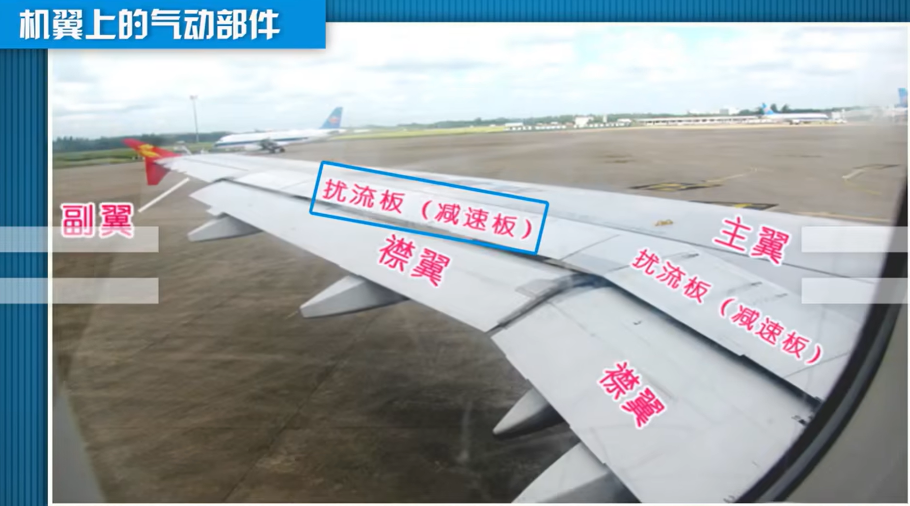

飞行器空气动力学学习笔记（低速翼型）
2024.11.06二次编辑
理论的话学这些已经足够了，基础知识不需要太多，该着手于上手实操和控制系统的调试了
故不再更新

机翼定义：平行于机翼的对称面截得的机翼截面称为翼剖面，通常称为翼型
飞机设计中，在确定了平面形状、机翼形状后，首先要做的工作就是翼型设计。
翼型的气动特性，直接影响到机翼及整个飞行器的气动特性
翼型设计：确定机翼的几何形状
圆头尖尾
用于低速、亚音速和跨音速飞行的飞机机翼，以及低超音速飞行的超音过飞机机翼
尖头尖尾
用于较高超音速飞行的超音速飞机机翼和导弹的弹翼
翼型的几何参数
1 | 前缘点、后缘点、翼弦 |
前缘点指的是最前面，后缘点指的是最后面，连接前缘和后缘的直线,称为翼型的弦线,其长称为几何弦长,简称弦长（一般用字母b表示）。
描述翼型经常使用体轴坐标系（相对应的是“风轴坐标系”）
无量纲坐标可以写为
经过这样的处理之后，翼型的长度是1
中弧线：每个x值对应的两个y值的平均值，中弧线的无量纲坐标$\bar{y}_f(\bar{x})$称为弯度分布函数，最大值称为相对弯度$\bar{f}$，对应的弦向位置记为$\bar{x}_f$
$\bar{c}<=12%$ 的翼型统称 薄翼型（薄翼型理论）
前缘顿度：
对圆头翼型，用前缘的内切圆半径 $r_L$ 表示前缘钝度，该内切圆的圆心在中弧线前缘点的切线上，圆的半径 $r_L$ 称为前缘半径
相对值定义 $\bar{r}_L=\frac{r_L}{b}$
后缘尖锐度：
后缘处上下翼面切线的夹角，称为后缘角 $\tau$，表示后缘的尖锐度
低速翼型编号
翼型的迎角
在翼型平面上，来流和翼弦之间的夹角，称之为迎角(攻角)
一定程度内，迎角越大，升力越大
对弦线而言，来流上偏升力为正，来流下偏升力为负
飞机的迎角：来流和机身轴线间的夹角
滑跑：三轮着地，速度方向平行于地面
拉起：前轮离地，速度方向平行于地面
起飞：三轮离地，速度方向偏向于轴线方向
对于一个无限翼展展长的机翼，展向取于一个单位展长的翼段，那么这个翼段上的绕流及气动力就是翼型的绕流和气动力
翼型表面上每个点都作用有压强和摩擦应力，它们产生一个合力品，将R分解为垂直于来流和平行于来流方向的两个分量
垂直于来流方向的力称之为升力
平行于来流方向的力称之为阻力
法向力垂直于翼弦方向的力
轴向力平行于翼弦方向的力
（$\alpha$ 表示来流迎角）
低速翼型指的是马赫数小于0.3的流动对于一个给定的翼型，在不同的迎角情况下他的绕流特征是不一样的
0°迎角绕流，流过相对平滑
10°迎角绕流，尾部少许分流

30°迎角绕流，整个背风区都出现了分离流动
合适迎角——稳流
临界失速迎角——气流分离
失速迎角——湍流
库塔-儒可夫斯基后缘条件
小迎角下，翼型绕流的压力分布及升力，与绕翼型的无粘位流的压力分布及升力无本质差别；因此，不计粘性作用，用绕翼型的无粘位流求解翼型压力分布及升力,是合理的近似
绕翼型无粘位流的升力问题，遵循儒可夫斯基升力定理，直均流流过任意截面形状翼型的升力:
$Y=\rho V_{\infty} \Gamma$ （升力=密度*来流速度*环量）确定速度环量是关键
只有后驻点在后缘点上，才能有唯一的速度环量值与之对应

圆弧形后缘翼型：$V_{S上}=V_{S下}$ ，后缘点没有载荷（库塔-儒可夫斯基后缘条件）
薄翼型理论
低速位流的控制方程
$\Phi$速度位，$\phi _{\infty}$来流速度位，$\vec{n}$翼面外法线单位矢
速度位：即“速度势”（velocity potential），标量，用于描述无旋流动（即涡度为零的流动）和处理理想流体（无粘性且不可压缩的流体）的流动问题。
设流场中的速度矢量为 ($\mathbf{v}$)，如果流体的流动是无旋的（即涡度 ($\nabla \times \mathbf{v} = 0$)），那么存在一个标量函数 ($\Phi$)（速度势），使得流场中的速度可以表示为该函数的梯度：($\mathbf{v} = \nabla \Phi$)。
由于流体是无旋的，可以保证存在这样一个标量函数，且该函数满足拉普拉斯方程 ($\nabla^2 \Phi = 0$)，这就是所谓的速度势方程。
速度位与速度的关系：
$\nabla\Phi = \left(\frac{\partial \Phi}{\partial x}, \frac{\partial \Phi}{\partial y}\right)=(v_x,v_y)$
单位外法矢分量 $\vec{n}=(n_x,n_y)$
翼型低速无粘位流
小扰动线性化近似的解析解法
扰动速度位的线性方程
翼型绕流速度位 $\Phi$ 满足拉普拉斯方程，因此它可分解为直均来流速度位 $\phi _{\infty}$ 和翼型存在引起的扰动速度位 $\phi$ ，即
因有 $\Phi=\phi _{\infty}+\phi\ \Delta \Phi=0\ \Delta\phi _{\infty}=0$（满足拉普拉斯方程）
所以扰动速度位也满足拉普拉斯方程（翼型的存在引起的扰动速度位）
翼面边界条件线化近似
翼面上 $x,y$ 方向的流速分量记为 $v_{xw},v_{yw}$
问题：绕过一个翼型，来流迎角为$\alpha$，来流速度为$V_\infty$的无粘位流的流动情况
$\alpha$表示来流迎角，$cos\alpha$ 趋向于0，$sin\alpha$趋向于$\alpha$
x方向速度 ≈ 来流速度 + 由于翼型的存在引起的扰动的x方向速度
带入得到


最终可以得到翼面边界条件的线性化近似表达式：
边界条件=来流速度（弯度±厚度-来流迎角）
压强系数的线化近似
根据伯努利方程，流场中任一点的压强系数为
$v$表示当地速度，$V_\infty$表示来流速度
略去二阶小量，只保留一阶小量，则有
其中 $C_P$是物面的压强系数
进一步近似，得到

分别为：来流迎角引起的部分+翼型弯度引起的部分+翼型厚度引起的部分
小结：扰动速度位的线性叠加
再将问题分解，即可分为迎角问题，弯板问题和厚度问题
分为三个分方程，每个方程都对应一种流动
弯度问题 对应 0攻角情况下中弧线弯板扰流，$y_{f(x)}$就是这个翼型的中弧线
厚度问题 对应 没有迎角的厚度对称问题
迎角问题 对应 有迎角的平板扰流
.gif)
.gif)
.gif)
.gif)
.gif)
.gif)
.gif)
.gif)
.gif)
.gif)